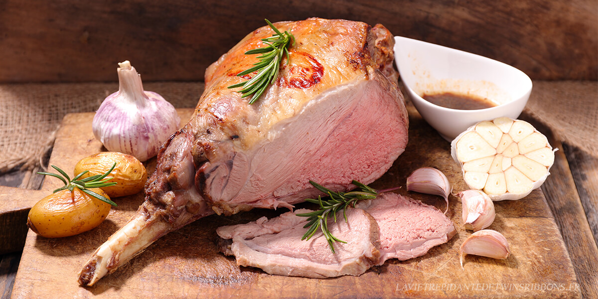

Gigot d'agneau a l'ail

Gigot d'agneau caramélisé a l'ail
Cette recette de gigot d'agneau à l'ail est simple à réaliser et ne
vous prendra pas des heures pour la préparer, loin de là ! Les
carnivores amateurs d'agneau adoreront cette recette qui met en
valeur le goût subtil de cette jeune viande grâce à la présence
soutenue de l'ail, mais aussi des herbes comme le laurier et le
thym. Un vrai régal pour un plat convivial, authentique et
traditionnel, à déguster à Pâques comme il se doit, ou pourquoi pas
lors d'une autre fête pour changer des habitudes.
Ingrédients
- Gigot d'agneau
- Beurre
- Thym
- Poivre du moulin
- Ail
- Laurier
- Huile d'olive
Étapes
-
Préchauffez le four à 220°C (th. 7). Laissez le beurre ramollir
à température ambiante.
-
Remplissez une casserole d’eau et faites la chauffer. Plongez-y
dans l’eau bouillante les gousses d’ail entières et non
épluchées pendant 2 min puis égouttez-les.
-
Ensuite, placez le gigot d’agneau dans un grand plat.
Badigeonnez-le de beurre ramolli et arrosez-le d’huile d’olive.
Salez, poivrez et parsemez de feuilles de laurier et de thym ou
romarin effeuillé.
-
Versez 20 cl d’eau dans le fond du plat et ajoutez les gousses
d’ail blanchies.
-
Faites cuire le gigot d’agneau au four, en comptant 15 min par
livre (environ 500g). Arrosez-le régulièrement de son jus de
cuisson pour rendre la viande plus tendre.
-
Avant de servir, laissez reposer le gigot pendant 10 min dans le
four éteint.